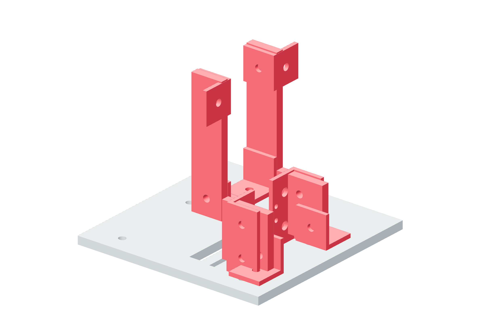

Screw drives / six copies45 / 179
Build the metal drive foundation
A metal floor and paired metal stanchions support the motor and thrust bulkhead. Their angles carry the transmission reaction into the parent bed or clevis.
AddPer drive: linear-drive-support · 2 motor-support-leg · 2 thrust-support-leg · 8 plain angles / guard-thrust-angle-minus / guard-thrust-angle-plus; angular drives also 2 thrust-angle-pad
Tools / setupNamed fabrication drawings · square · caliper · M5 angle-joint hardware

- Identify the floor and the 100 mm motor legs / 42.65 mm thrust legs. Transfer each actual angle’s pattern onto its named metal stations.
- Build both motor legs with their lower and upper metal angles. Keep the top slot-support faces parallel and square to the floor.
- Build both thrust legs and their post angles. Use the minus/plus guard-angle pair for the right-side upper feet. Fit shared M6 posts through Ø6.5 holes; retain Ø5.5 in the other legs.
- Seat thrust foot angles on the XYZ bed pad or the angular drive’s 6.35 mm metal pads. Keep every reaction path metal-backed.
Ready when
Floor, stanchions and angle faces form one retained metal foundation, without a floating printed plate or skewed slot-support face. An unsupported leg, wrong pad or bent angle changes the screw/motor axes. Rebuild that metal foundation before fitting the transmission.